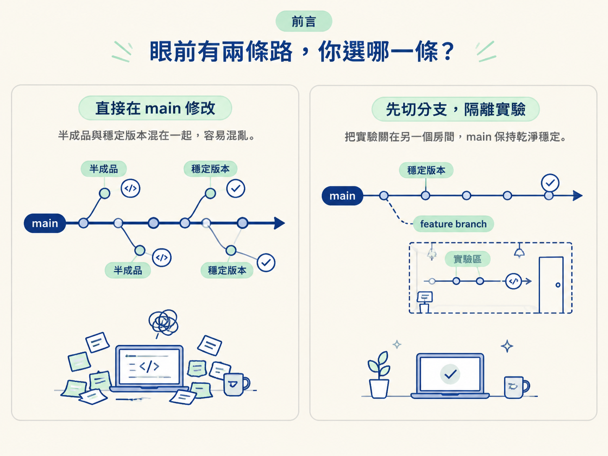
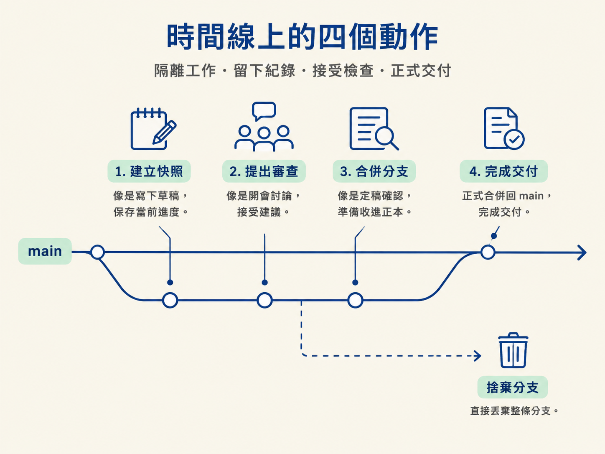
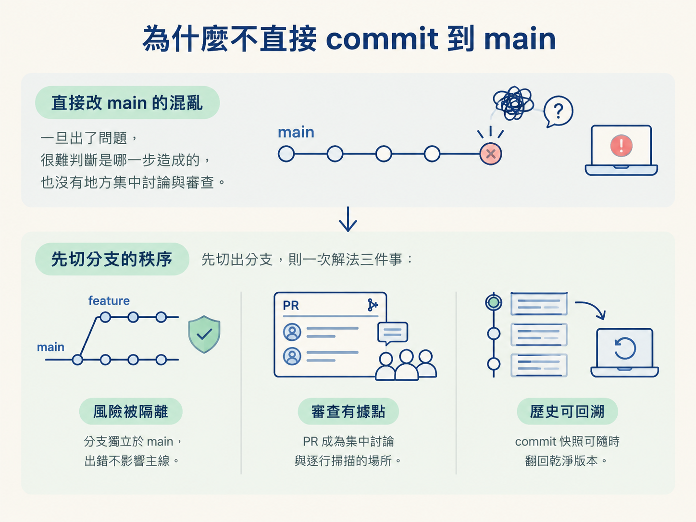

假設你要讓 agent 做一個登入功能，而且這項功能會動到十幾個檔案。你可以直接在 main 這條主線上修改，也可以先切出一條新的分支，在裡面完成、檢查，再合併回去。
兩條路都可能把功能做出來，真正的差別在於：如果中途出錯，哪一條路比較容易收拾？直接改 main，半成品和穩定版本會混在一起；先切分支，則像把實驗關在另一個房間裡，做壞了也不會弄髒客廳。

這一節用一張時間線，把 branch、commit、PR、merge 四個動作排上去。你會看到它們各自站在哪一格，也會知道為什麼幾乎所有認真的專案，都不把還沒驗證的功能直接丟進 main。
學完後，你應該能用「時間線上的四個動作」說明 branch、commit、PR、merge 各自在做什麼，以及為什麼不該直接把功能 commit 到 main。
先從基準點開始。一個 repo 通常會有一條主要分支，慣例上叫做 main；較舊的專案可能叫 master，兩者只是名稱不同。
你可以把 main 想成「隨時可以出貨的版本」。上面的程式碼應該能執行，也應該是團隊已經信任的狀態。正因為如此，任何還沒驗證完成的改動，都不該直接往這條線上丟。
多人專案裡，這個規則尤其重要。如果每個人都直接修改 main，A 的半成品、B 的實驗、C 的一鍵改動就會全部混在一起。到最後，沒人說得清楚哪段是誰改的、為什麼要改，也不知道現在到底還能不能正常執行。
所以大家通常會採用另一種方式：先從 main 切出自己的工作線，在那裡完成改動，確認沒問題後再合併回去。
把開發想成一條向右延伸的時間線，main 是其中一條主線。接下來這四個動作，就是你在這條線上隔離工作、留下紀錄、接受檢查，最後交付的方式。

| 動作 | 在做什麼 | 對應的比喻 |
|---|---|---|
| branch（分支） | 從 main 的某個時間點切出一條平行線，功能在這裡進行 | 在正式稿之外開一本草稿本 |
| commit（提交） | 在分支上留下一個快照，記錄一小段進度 | 草稿本上的書籤，可以翻回去 |
| PR（pull request） | 提出「請大家看過我這條分支上的改動」的請求 | 把草稿送進編輯會議審查 |
| merge（合併） | 審查通過後，把分支的改動併回 main | 定稿，正式收進正本 |
先看 branch。它是從 main 某個時間點長出去的平行世界。你在分支上做任何事，main 都不會受到影響，這正是它最大的價值。
功能做到一半、agent 把某個檔案改壞了，或你臨時想試另一種做法，這些風險都會被關在分支裡，不會污染那條「隨時可出貨」的主線。課程裡使用的分支名稱，例如 auth-ui-design，也能讓人一眼看出這條線正在處理什麼。
接著是 commit。它是在分支上留下的一個快照，每個 commit 都代表「到這裡為止的一小段成果」。它讓進度被切成有意義的段落，也讓你不會忘記儲存。
如果某個功能越做越歪，你可以回到上一個乾淨的 commit，從那裡重新開始，而不用整包重寫。換句話說，commit 就像草稿本裡的書籤：你可以繼續往後寫，也可以翻回某一頁，看看當時還很正常的版本。
PR 是最容易被誤解的一個。它的全名是 pull request，字面上像是「請求批准」，但它真正的作用是提出改動，讓改動被看過。
開一個 PR，等於在跟 repo 說：「我這條分支上的工作完成了，請大家審查。」你可以在 PR 裡討論，AI 審查工具也可以在這裡逐行掃描。上一節提到的「審查」，需要一個實際發生的場所，而 PR 就是那個場所。
最後是 merge。當審查通過，而且你也確認沒有問題，就把這條分支合併回 main，讓改動正式進入正本。
當然，也可能得到另一個結局：discard，也就是直接捨棄整條分支。如果試驗結果不理想，丟掉分支即可，main 從頭到尾都沒有被碰過。這正是分支讓人安心的地方：你可以放心嘗試，因為不滿意時還有退路。
把這四個動作放在同一張時間線上，答案就會變得清楚。直接對 main 動手，等於把「還沒驗證的改動」和「已被信任的版本」放在同一條線上。
一旦出了問題，你很難判斷是哪一步造成的，也沒有一個天然的地方可以集中討論與審查。先切出分支，則一次解決三件事：風險被隔離、審查有了據點、歷史可以回溯。

多人協作時，這個模式會更自然。每個人都從 main 切出自己的分支，在同一條主線的基礎上各自工作，完成後再一條一條合併回去。每條分支就像一個獨立工作區，彼此不會在還沒準備好時互相踩到。
先把這條時間線弄清楚很有用，因為後面的論壇與操作動線，都是繞著它設計的。之後你在 VS Code 裡按下的每一個按鈕，其實都只是這四個動作的其中一個。
main 是永遠可用的主線，還沒驗證的改動不該直接丟上去。branch 從 main 切出平行線，隔離正在開發的功能；commit 在分支上留下快照，讓你能夠回溯；PR 提出改動，讓審查有地方發生；merge 把通過審查的內容併回 main，不滿意時則可以 discard。這四個動作合在一起，就是讓高速產出仍然值得信任的骨架。
這裡建立的是一個觀念模型：先隔離，再留下紀錄，接著讓改動被看過，最後才放回主線。下一節會把這張時間線變成一條實際可走的流程：建立分支、產生 commit message、commit、push，一次走完。